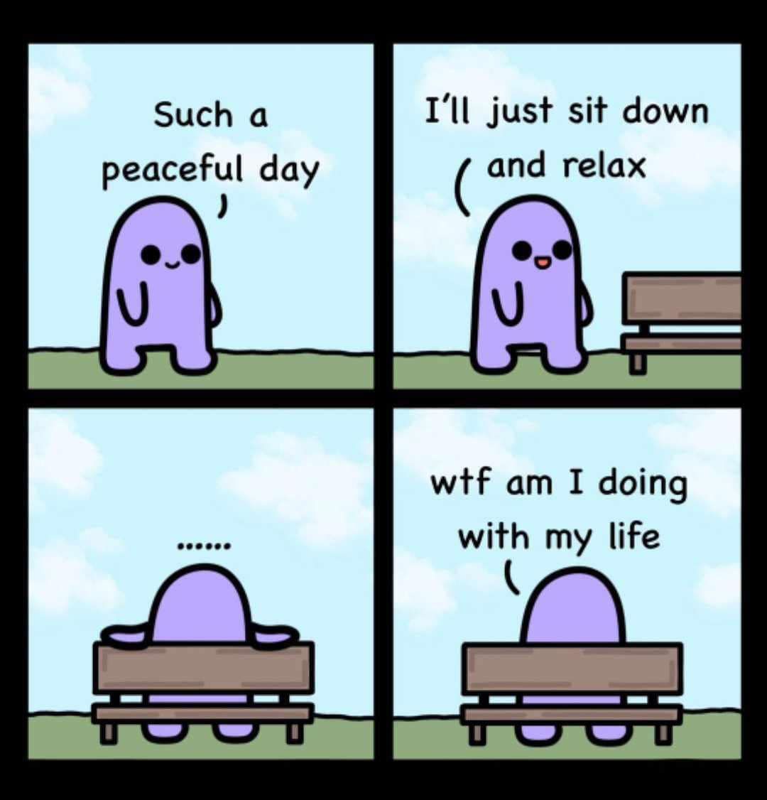
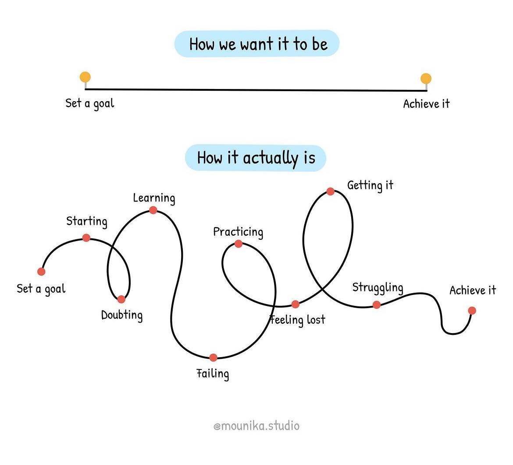

From Gaming to Coding
Published June 10, 2024
I used to be a professional player in League of Legends. My team, CAF (Chibby and Friends), won numerous tournaments. It was an amazing experience, filled with excitement, teamwork, and lots of practice. Unfortunately, like many others, our team had to part ways during the pandemic. Suddenly, I found myself with a lot of free time and no clear direction.
After the team disbanded, I spent a lot of time playing League casually and watching movies. While it was fun, I started feeling like I was wasting my time. I knew I needed to find something new to focus on, something that would challenge me and help me grow.
In August 2023, I stumbled upon coding, and it felt like entering a secret realm I had never explored. I was surprised I hadn't tried it earlier! Starting with HTML, CSS, and Javascript, the more I learned, the more captivated I became. Coding feels like solving puzzles, and there's nothing quite like the satisfaction of seeing my code work seamlessly.
Since starting in August, I've learned a lot about the basics of coding. I've completed several online courses, built small projects, and even started contributing to open-source projects. Each step forward feels like a victory, much like winning a game.
One of the first challenges I encountered was debugging. I spent hours trying to figure out why my code wasn't working, only to find out it was a missing semicolon or a misplaced bracket. These moments were frustrating, but they taught me the importance of attention to detail and patience.
Starting something new can be daunting, especially when you see others who are much more experienced. I often felt like an imposter, doubting my abilities and questioning if I could ever reach their level. Overcoming this mindset was tough, but with time and practice, I started to believe in myself and my progress.
Looking Ahead
As I move forward, I plan to delve into more advanced topics such as backend development, databases, and perhaps even AI and machine learning. The possibilities in coding are endless, and I'm eager to explore them all. I'll keep updating this blog with my progress, challenges, and any tips I learn along the way. Thank you for joining me on this journey, and I hope to continue sharing my experiences with you.